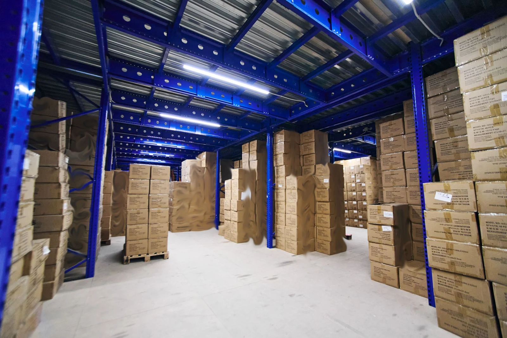

Проверено в исходнике: 18 сентября 2026 · Восстановлено: 4 ноября 2026
Требования Wildberries к упаковке и поставке FBW в сентябре–октябре 2026
Wildberries называет складскую модель «Склад WB» / FBW. В запросах продавцов ее часто называют «FBO Wildberries», поэтому обе формулировки встречаются в этой инструкции. Смысл один: продавец заранее готовит партию и передает ее на склад Wildberries, после чего маркетплейс хранит товар и выполняет заказы.
Главное правило простое: каждая единица должна быть упакована так, чтобы пережить приемку, складские перемещения и дальнейшую доставку, а ее штрихкод и обязательная маркировка должны читаться без ошибок.
Если нужна не инструкция, а подрядчик, который примет товар, упакует, промаркирует и сформирует поставку, Преп-Центр оказывает услугу подготовки поставок FBO/FBW на Wildberries.

Короткий чек-лист перед поставкой
Перед созданием и отгрузкой партии проверьте 7 вещей:
- Для каждого SKU выбран подходящий тип индивидуальной упаковки.
- Штрихкод товара совпадает с данными в кабинете Wildberries и читается сканером.
- Жидкости, флаконы, дозаторы и хрупкие товары защищены по правилам своей категории.
- Товар укладывается в ограничения выбранного типа поставки по весу и габаритам.
- Короба или паллеты собраны без выступающих и поврежденных элементов.
- Поставка создана на нужный склад, а выбранный склад принимает эту категорию товара.
- Перед самой отгрузкой требования повторно сверены в официальной инструкции Wildberries.
Правила меняются. Эта страница отражает требования, проверенные 18 сентября 2026 года.
Какая индивидуальная упаковка нужна Wildberries
Для модели FBW каждая единица должна иметь собственную упаковку. Она закрывает товар со всех сторон, защищает от влаги и загрязнений и не должна быть существенно больше самого товара.
Упаковка подбирается по категории. Один универсальный вариант для шампуня, стеклянной сыворотки, бытовой химии и канцелярского набора не работает.
Для товара с риском протечки обычно приходится решать сразу 2 задачи: зафиксировать крышку или дозатор и защитить внешнюю упаковку от повреждения. Для хрупкого товара добавляется защита от удара.
Преп-Центр использует воздушно-пузырьковую пленку и термоусадку как отдельные операции подготовки. Конкретная схема определяется товаром и действующей инструкцией Wildberries.

Ограничения для коробов и монопаллет
По действующей инструкции Wildberries для FBW:
Короб и SuperSafe
- вес товарной единицы до 25 кг;
- одна сторона до 80 см;
- сумма 3 сторон до 160 см.
Монопаллета
- вес товарной единицы до 25 кг;
- одна сторона до 120 см;
- сумма 3 сторон до 200 см.
Для части категорий, включая косметику, на монопаллете действуют более жесткие ограничения: одна сторона до 80 см, сумма 3 сторон до 160 см.
Все склады Wildberries принимают поставки на деревянных европаллетах 120 × 80 × 14,5 см.
Какие типы поставки используются в FBW
Wildberries использует несколько типов поставки, в том числе:
- короб;
- SuperSafe;
- монопаллету;
- поштучную паллету.
Тип выбирается с учетом товара, объема партии и доступных условий конкретного склада. Перед упаковкой крупной партии лучше сначала определить схему поставки, иначе уже подготовленные грузоместа может потребоваться переделывать.
Для сборки коробов и паллет Преп-Центр может выполнить комплектацию партии и подготовить грузоместа к отгрузке.
Как упаковывать шампуни, гели и другую косметику
Wildberries отдельно описывает упаковку уходовой косметики. Для шампуней, гелей, жидкого мыла, кремов, сывороток, пенок и похожих товаров схема зависит от заводской упаковки и конструкции флакона.
В правилах используются комбинации:
- фиксация дозатора или крышки;
- воздушно-пузырьковая пленка;
- пакет плотностью от 50 мкм;
- термоусадочная пленка от 50 мкм;
- дополнительный короб.
Для стеклянных банок и флаконов нужна дополнительная защита от удара. Для наборов сначала проверяется каждая единица, затем комплект фиксируется как одна продажная единица.
Если товар относится к маркируемой категории, отдельно проверяются коды «Честного знака». Этикетка маркетплейса и код обязательной маркировки решают разные задачи и не должны подменять друг друга.
Что делать с бытовой химией
Жидкая бытовая химия требует контроля крышек, дозаторов и распылителей. В зависимости от упаковки товара Wildberries допускает разные комбинации пакета, ВПП, термоусадки и короба.
Для флаконов с триггером или дозатором особенно важно исключить случайное нажатие и протечку. Для канистр и крупных емкостей правила отличаются от небольших флаконов.
Если партия смешанная, схема упаковки должна задаваться по SKU, а не одной инструкцией на весь ассортимент.
Штрихкоды и этикетки Wildberries
Штрихкод должен соответствовать товарной позиции и нормально считываться после упаковки. Если пленка, ВПП или дополнительный короб закрывают исходный код, этикетку нужно разместить так, чтобы ее можно было отсканировать без вскрытия упаковки.
Преп-Центр печатает и наносит этикетки маркетплейсов после упаковочных операций, когда это требуется технологией партии.
Частые причины проблем при приемке
Проблемы чаще всего возникают из-за сочетания нескольких мелких ошибок:
- поврежденная или неполная индивидуальная упаковка;
- протекающая тара;
- неправильно закрепленный дозатор;
- нечитаемый штрихкод;
- несоответствие габаритов выбранному типу поставки;
- неправильное формирование коробов или паллет;
- попытка поставить категорию на склад, который ее не принимает.
Чем крупнее партия, тем дороже переделка после упаковки. Поэтому до запуска поточной операции полезно собрать и проверить контрольный образец.
Что может сделать Преп-Центр
Для поставки на Wildberries Преп-Центр может выполнить в одном цикле:
- приемку партии;
- сортировку по SKU;
- проверку товара и упаковки;
- ВПП и термоусадку;
- печать и нанесение этикеток;
- нанесение переданных клиентом кодов «Честного знака», когда это требуется;
- комплектацию наборов;
- сборку коробов и паллет;
- подготовку к отгрузке по FBW.
Для срочных партий есть отдельная услуга срочной обработки. Стоимость рассчитывается по фактическому набору операций, действующие цены собраны в тарифах Преп-Центра.
Официальные источники Wildberries
Требования на этой странице сверены с официальной базой знаний Wildberries:
Частые вопросы
FBO Wildberries и FBW – это одно и то же?
В пользовательских запросах «FBO Wildberries» часто означает поставку товара на склад Wildberries. Официально Wildberries называет эту модель «Склад WB» / FBW.
Можно ли упаковать всю жидкую продукцию одинаково?
Нет. Схема зависит от тары, объема, материала флакона, наличия дозатора или распылителя и категории товара. Для стекла, мягкой упаковки и флаконов с триггером действуют разные требования.
Нужна ли ВПП для шампуня?
Она используется в ряде допустимых схем, особенно когда требуется дополнительная защита флакона. Точный вариант нужно выбирать по актуальному правилу для конкретной упаковки товара.
Можно ли наклеить этикетку до термоусадки?
Иногда это приведет к тому, что код окажется закрыт или деформирован пленкой. Порядок операций лучше задавать после определения финальной упаковки, чтобы штрихкод оставался читаемым.
Можно ли подготовить поставку целиком на одном складе фулфилмента?
Да, если подрядчик выполняет все нужные операции. В Преп-Центре можно принять партию, упаковать, промаркировать, собрать грузоместа и подготовить ее к FBW. Подробнее – на странице отгрузок FBO/FBW на Wildberries.
Как часто нужно проверять требования Wildberries?
Перед каждой новой крупной поставкой и после заметных изменений в кабинете продавца. Для этой страницы дата последней проверки указывается вверху.

Подготовить поставку на Wildberries
Если нужно рассчитать подготовку партии, отправьте менеджеру фото товара, количество единиц, число SKU и предполагаемый склад Wildberries. По этим данным можно определить операции и предварительную стоимость.